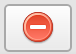

Editing Wild Encounters
Porymap provides a tab for editing wild Pokémon encounters. Navigate to the “Wild Pokemon” tab in Porymap’s main window.
If there are no wild encounters for the current map, you will see this empty screen. Adding wild Pokémon data is as simple as adding new encounter groups.

Empty Encounter Tab
Otherwise, you should see the table of wild encounters for the current map. From this table, clicking on a cell will allow you to edit the Species, Min Level and Max Level for each encounter slot. You can also edit the Encounter Rate in the upper-right cell, which affects how often the player will enter an encounter.

Populated Encounter Tab
Encounter data is divided into “fields”, which normally represent the different ways that pokémon can be encountered (by default, they are land, water, rock_smash, and fishing). There is a tab for each of these field types, and on each tab you will find the corresponding table of wild encounters. A tab will be disabled if the current map has no encounters for that field type.

Field Tabs
If a field tab is disabled, you can enable it by clicking the button. If a tab is already enabled, it can be disabled by clicking the  button (this will delete the wild encounters for that field type). You can click the  button to copy and paste data between tabs. To add or remove tabs entirely, see Configuring the Wild Encounter Fields.
button to copy and paste data between tabs. To add or remove tabs entirely, see Configuring the Wild Encounter Fields.
{kind=link}
{kind=link}
Adding New Encounter Groups
An encounter group is just another set of wild encounters that are available for a single map. For example, in a pokefirered project most maps have one group for FireRed and one for LeafGreen. Another example is the map “Altering Cave”, which has many different possible encounter groups.
To create a new encounter group, click the button next to the Group dropdown.
{kind=link}

Add New Encounter Group
This will open up a window to create your new encounter group.
You must give your new encounter group a unique name. Then you can choose which encounter fields you’d like to add to your new group. Checking the Copy from current group box will copy not only the fields from the currently-displayed encounter group, but also the wild Pokémon data from each field tab.

New Encounter Group Window
One possible use for having multiple encounter groups for a single map is to implement time of day encounters.

Time of Day Encounter Groups
Configuring the Wild Encounter Fields
For each encounter field (land, water, etc.) the number of wild encounters slot and their percent chances are the same across all maps. If you’d like to change this data, or add/remove one of these encounter fields, you can do this by clicking the  button.
button.
Configure JSON Window
The Field dropdown will allow you select which field you want to edit. Editing the numbers on this window changes the frequency that each encounter slot will be chosen when a wild encounter occurs, and the and  buttons will add and remove encounter slots for the field.
buttons will add and remove encounter slots for the field.
Note
The numbers for each encounter slot are not necessarily percentages, they are relative to the total listed at the bottom of the window. The actual percentages will be displayed in the table.
The Delete Field button will remove the current field, and the Add New Field... button will add a new one.
Let’s add a headbutt field to our wild encounters! First, we’ll click Add New Field... and name the new field headbutt.

New Field Name
Let’s have four slots for our new headbutt field. We can click the button to add 3 additional fields, then set their values to distribute how often they appear.

If we accept the changes, we can now assign Pokémon to each slots, and adjust the levels.

Summary Chart
Clicking the  button will open a window with charts that summarize the data on your current Wild Pokemon tab. The window has two tabs,
button will open a window with charts that summarize the data on your current Wild Pokemon tab. The window has two tabs, Species Distribution and Level Distribution.
On the Species Distribution tab, it adds up the percent chance for each of your encounter slots and shows how often each species occurs.

Species Distribution
The numbers in all of these charts are rounded; you can get the actual values by mousing over the individual parts of a chart. This may also help when the data is too small for labels, like with PSYDUCK in the example above.
On the Level Distribution tab, we can see how the level range is distributed across our encounter slots.
Level Distribution
If you are viewing an encounter type that has groups (like the various fishing rods) you can change the current group with the Group dropdown. This chart answers the question “for a single encounter, what is the likelihood of encountering a species x at level y?”
Checking the Individual Mode box will show us the level distribution within a single species. The chart will now answer the question “if a species x is encountered, what is the likelihood that it will be level y?”

Individual Level Distribution
Once in Individual Mode we can change the displayed species with the Species dropdown. The level distribution chart for a single species can also be accessed by clicking directly on the chart when Individual Mode is not already checked.
The colors of the charts can be changed using the Theme dropdown in the upper-left corner of the window.
Note
If you are compiling Porymap yourself, the button will only be displayed if the QtCharts module is installed.
Species Search
Clicking the button will open a window that lets you search across all maps for a single species.
{kind=link}

Search Window
To search for a species, simply select it in the dropdown or type in its SPECIES_NAME. Any map that has the given species in its wild encounters table will appear in the results. The results can be sorted by clicking on any of the column labels, and double-clicking on a cell will open the corresponding encounter table.

Search Results